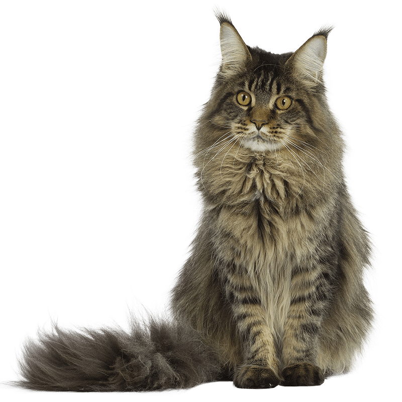

VAZE's ANIMAL FARM is a brand-new website dedicated to celebrating the rich tapestry of animal life. Whether you're an animal lover, a student, a teacher, or just a curious soul, BreedZoo is designed to be your digital encyclopedia of animals and their breeds. Our mission is to educate, inspire, and foster a deeper appreciation for the animal kingdom.
